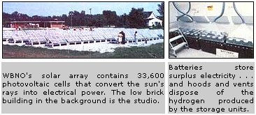

The World's first solar-powered radio station is on the air!
Bryan, Ohio-located in the flat, northwestern corner of the Buckeye State, 50 miles west of Toledo-is nobody's idea of "Sun City". The area has rainy summers . . . long, harsh winters . . . and cloud covers that manage to look ominous even when they're not dropping rain or snow.
It was precisely this no-quarter-given climate, however, that led to the decision to locate the world's first solar-powered commercial radio station irk Bryan. The concept's backers felt that, if the enterprise could succeed in such an obviously "nonsolar" location, it would be viable most anywhere. So, to prove the point, WBNO-AM (a 500-watt, dawn-to-dusk operation) transferred its electrical allegiance from Toledo Edison to the sun on August 29, 1979.
BETTER THAN EXPECTED
The $300,000 experiment, which is expected to run for the next 20 years, was designed and is being monitored by the Lincoln Laboratory at the Massachusetts Institute of Technology . . . under a grant from the U.S. Department of Energy.
At the heart of WBNO's new power system is a one-third-acre array of photovoltaic cells-33,600 of them in all-that convert the sun's rays into direct-current electricity. At noon on a clear day, the setup can produce over 15,000 watts . . . far more power than the station requires.
In fact, Luke Thaman, WBNO's general manager, reports that the early operating results have been much better than expected. During the course of its first six days of solar broadcasting, the station required 159 kilowatt hours. . . while the sun-cells produced 170.
In addition, significant quantities of power have been generated, Luke says, even when the sky is partially obscured by cloud cover and rain. Lincoln Lab's engineers estimate that the system will furnish as much as 80% of the station's electrical needs on a year-round basis . . . although-at the time that this magazine went to press-the actual amount of power provided by the solar cells was already a full 86% of the radio station's requirements!
HOW THEY DID IT
The solar array beside the station is made up of seven rows of south-facing galvanized steel racks. To minimize shadowing, the rows are placed 12 feet apart, and the racks-which are bolted to concrete blocks and anchored to the ground with steel augers-can remain stable in 100-MPH winds. The cells themselves are arranged in modular panels of 42 each which are, in turn, bolted onto the racks. If a single unit is damaged, the entire module is replaced.
To qualify for the project, WBNO had to install a new solid-state transmitter, provide equipment for converting DC electricity into AC, and build a storage room for the monitoring machinery and the batteries that hold the surplus power the solar cells often generate. The station management also had to agree to make the site-and their research findings-open to the public.
Because the electrical flow from the cells varies in strength, the system employs four large batteries-similar to those used in diesel locomotives-to store the excess electricity. In the morning, before the sun is strong enough to activate the cells, the station draws its energy from the storage units. Fully charged, the batteries can keep WBNO broadcasting for about a day and a half, and-when they're charged up to 90% of their capacity-an automatic control adds on newsroom, studio, and production room loads. If the added drain doesn't deplete the surplus being produced, parts of the panel array are automatically disconnected until they're needed again.
AUTOMATED PERFORMANCE
The system is so completely automated that it doesn't even require on-site experts to keep it going. A 50-channel data logger keeps track of all relevant weather and performance information and records it on a small cassette, which is mailed to the Lincoln Laboratory once a week for analysis. If any part of the system malfunctions, an alarm alerts station personnel to shut off the panels until the trouble can be corrected. (Reverting to the station's normal source of electricity-the local power company-is as simple as turning a switch.)
One of the big questions that still must be fully answered is how well the solar array will function during a heavy snow season. The designers say that the sun's relation to the earth in winter will make the cells even more efficient than in summer . . . and those same experts are counting on the sun's rays (and the electrical activity within the cells) to melt the snow before it can accumulate on the tough polyvinyl shields that cover the modules. Although this past winter was a mild one, WBNO's experience during the few big snowfalls indicated that the MIT designers' theories are correct: The snow melted away from the solar cells-without assistance-within one to two hours.
Right now, the main drawback to the widespread use of photovoltaic cells is their cost. Although the devices are made primarily of silicon-an abundant element-the cells can't be mass-produced inexpensively. EDITOR'S NOTE: That situation may be changing very soon, as revealed by "Dollar-a-Watt Solar Electricity" in MOTHER NO. 62, page 44.1 Cell prices are quoted in terms of the watts they produce, and the three-inch units used in the Bryan project-priced at $14 per watt-are rated at about one-half watt each, or $7.00 a cell.
However, the costs are going down. The company that supplied cells for the experimental station (Solarex, Inc. of Rockville, Maryland) has since reduced the price to $9.00 a watt.
Finally, we're proud to say that-as befits such a natural, sun-powered operation-WBNO is a country music station . . . which also broadcasts MOTHER's radio show.
|
|
 |
|